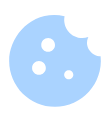

Povol cookies pro sledování svého progresu!
Zakázat
Povolit
Maturitní četba SPŠT
2025/26
všechna období
18. století
19. století
20. a 21. století - světová
20. a 21. století - česká
všechny literární druhy
poezie
próza
drama
zobrazit všechny
přečtené
rozečtené
plánuji
Přečteno: 0/20
Období:
18. století:
19. století:
20. století - světová:
20. století - česká:
Literární druhy:
próza:
poezie:
drama: